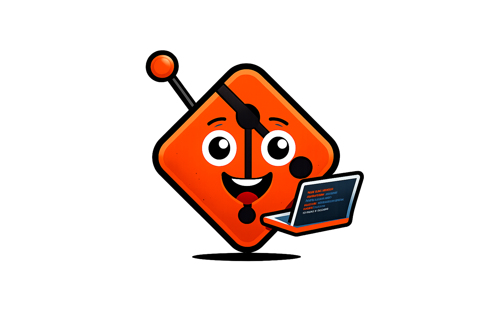

O que é o gitWIKI?
Uma página prática para aprender Git
Aprenda Git do Básico ao Avançado
O gitWIKI é um guia prático e direto ao ponto, pensado para desenvolvedores iniciantes e intermediários que querem dominar o fluxo de trabalho com Git. Aqui você encontrará comandos essenciais, exemplos de uso no dia a dia e explicações claras sobre conceitos importantes como branching, merge, rebase, trabalho com remotos e resolução de conflitos.
Nosso objetivo é tornar o aprendizado acessível: cada comando vem com uma explicação curta, exemplos e a possibilidade de copiar o comando para testar no terminal. Comece pelos conceitos básicos e avance no seu ritmo até técnicas mais avançadas.
Ver comandos Contato
Para quem é
Estudantes, programadores autônomos, membros de equipes e curiosos — qualquer pessoa que precise entender como versionar código, colaborar com outros desenvolvedores e manter histórico das alterações.
Como usar
- Comece pelos comandos básicos: init, add, commit, push, pull.
- Pratique clonando repositórios e fazendo commits locais.
- Avance para branching, merge e rebase em projetos de teste.
- Use a seção de comandos como referência rápida.